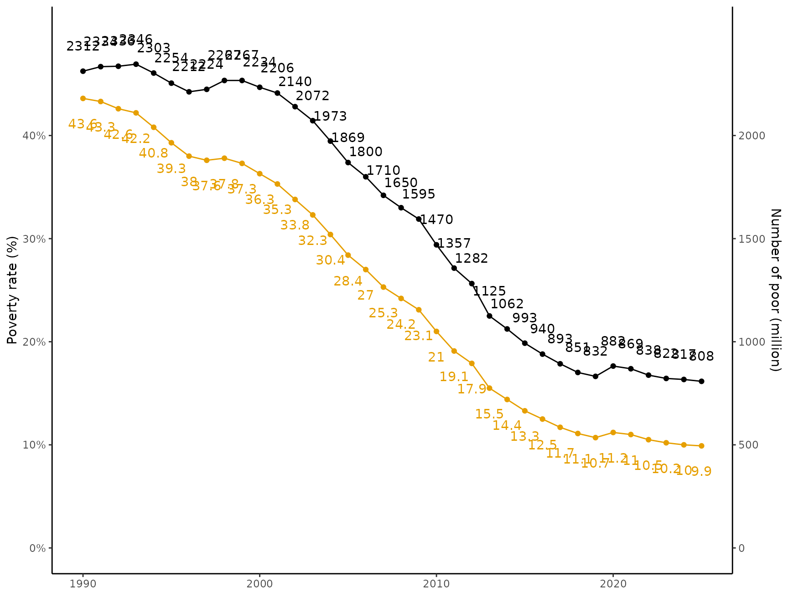
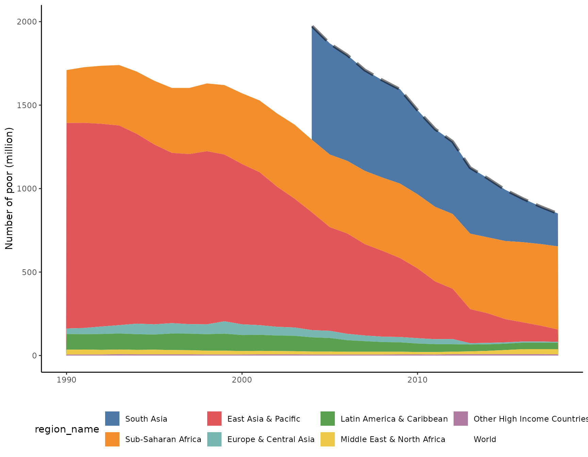
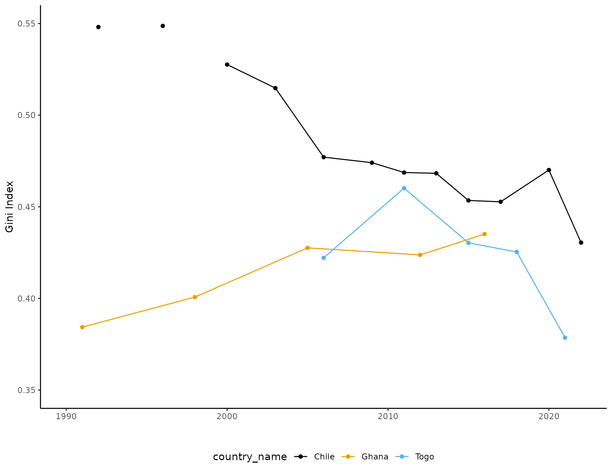
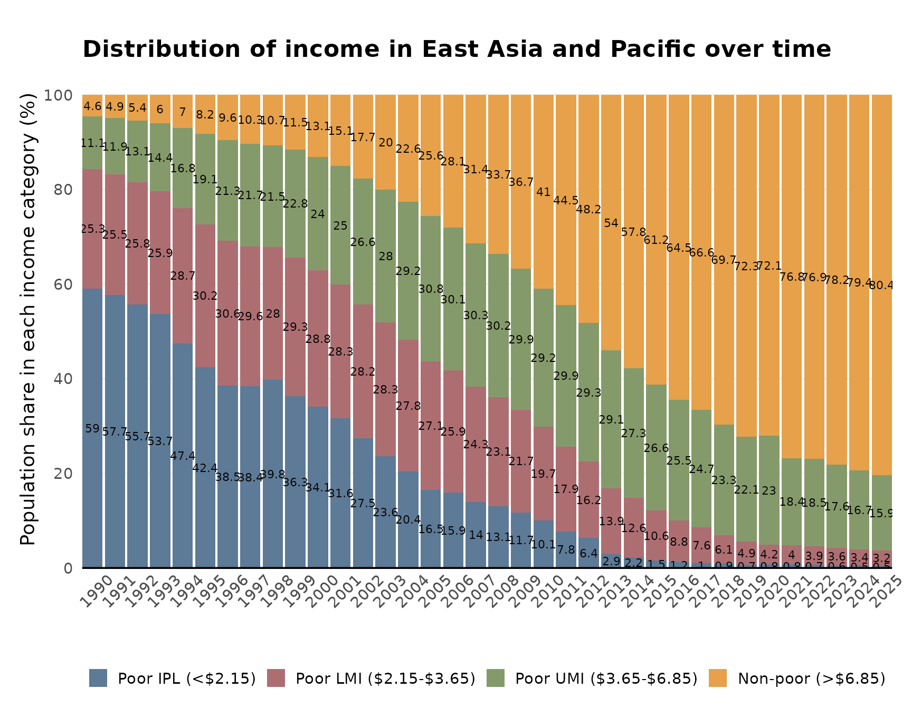
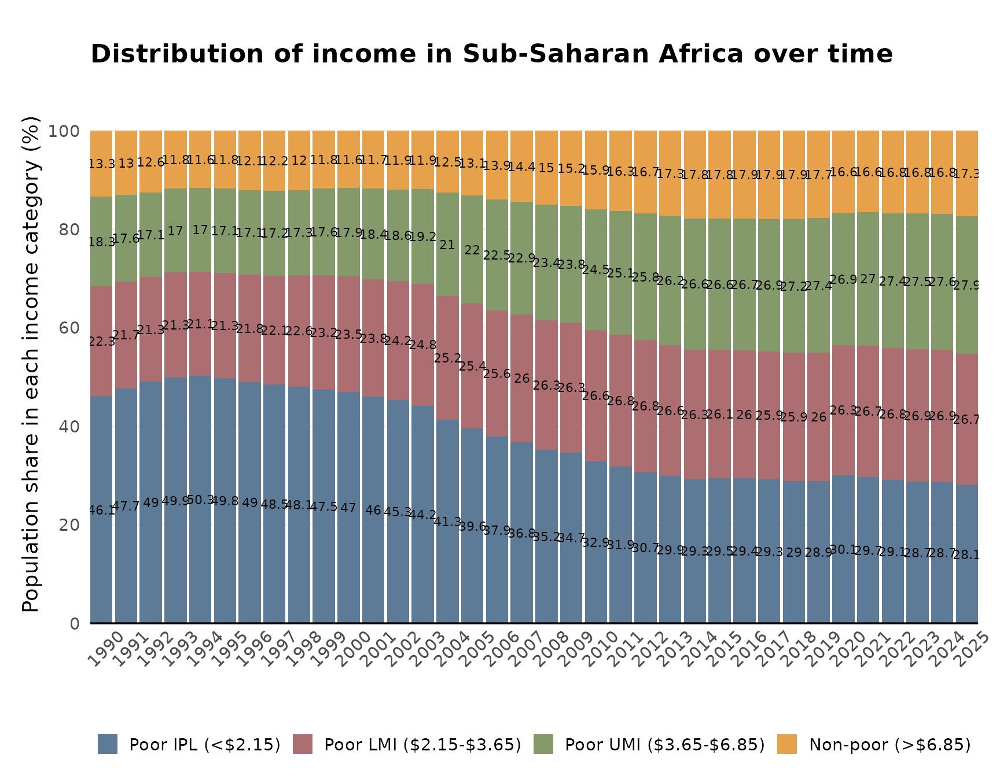

vignettes/articles/visualization-examples.Rmd
visualization-examples.Rmd
library(pipr)
library(ggplot2)
library(tidyr)
library(ggthemes)
library(forcats)
library(scales)
library(dplyr)
library(purrr)
df <- get_wb() %>%
filter(year > 1989, region_code == "WLD") %>%
mutate(
pop_in_poverty = round(pop_in_poverty / 1000000, 0),
headcount = round(headcount, 3)
)
headcount_col <- "#E69F00"
ggplot(df, aes(x = year)) +
geom_text(aes(label = headcount * 100, y = headcount), vjust = 1, nudge_y = -0.02, color = headcount_col) +
geom_text(aes(label = pop_in_poverty, y = pop_in_poverty / 5000), vjust = 0, nudge_y = 0.02) +
geom_line(aes(y = headcount), color = headcount_col) +
geom_line(aes(y = pop_in_poverty / 5000)) +
geom_point(aes(y = headcount), color = headcount_col) +
geom_point(aes(y = pop_in_poverty / 5000)) +
scale_y_continuous(
labels = scales::percent,
limits = c(0, 0.5),
breaks = c(0, 0.1, 0.2, 0.3, 0.4),
sec.axis = sec_axis(~.*5000, name = "Number of poor (million)",
breaks = c(0, 500, 1000, 1500, 2000))) +
labs(
y = "Poverty rate (%)",
x = ""
) +
theme_classic()
df <- get_wb() %>%
filter(year > 1989 & year < 2019) %>%
mutate(
pop_in_poverty = round(pop_in_poverty / 1000000, 0),
headcount = round(headcount, 3)
)
regions <- df %>%
filter(!region_code %in% c("WLD", "AFE", "AFW")) %>%
mutate(
region_name = fct_relevel(region_name,
c("Other high Income",
"Europe and Central Asia",
"Middle East and North Africa",
"Latin America and the Caribbean",
"East Asia and Pacific",
"South Asia",
"Sub-Saharan Africa"
))
)
world <- df %>%
filter(region_code == "WLD")
ggplot(regions, aes(y = pop_in_poverty, x = year, fill = region_name)) +
geom_area() +
scale_y_continuous(
limits = c(0, 2000),
breaks = c(0, 500, 1000, 1500, 2000)
) +
scale_fill_tableau(palette = "Tableau 10") +
labs(
y = "Number of poor (million)",
x = ""
) +
theme_classic() +
theme(
legend.position = "bottom"
) +
geom_line(data = world, size = rel(1.5), alpha =.5, linetype = "longdash")
df <- get_stats(country = c("CHL", "GHA", "TGO"),
reporting_level = "all") %>%
filter(year > 1989) %>%
select(country_name:is_interpolated, gini)
ggplot(df, aes(x = year, y = gini, color = country_name)) +
geom_line() +
geom_point(data = df[df$is_interpolated == 0, ]) +
scale_y_continuous(
limits = c(0.35, 0.55),
breaks = c(0.35, 0.40, 0.45, 0.50, 0.55)
) +
scale_color_colorblind() +
labs(
y = "Gini Index",
x = ""
) +
theme_classic() +
theme(
legend.position = "bottom"
)
poverty_lines <- c(2.15, 3.65, 6.85)#, 15)
df <- map_dfr(poverty_lines, get_wb, year = "all")
out <- df %>%
filter(year >= 1990,
region_code %in% c("SSA", "EAP")) %>%
select(poverty_line, region_code, region_name, year, headcount) %>%
mutate(
poverty_line = round(poverty_line * 100, 1),
headcount = headcount * 100
) %>%
pivot_wider(names_from = poverty_line,
names_prefix = "headcount",
values_from = headcount) %>%
mutate(
percentage_0 = headcount215,
percentage_1 = headcount365 - headcount215,
percentage_2 = headcount685 - headcount365,
percentage_3 = 100 - headcount685
#percentage_3 = headcount1500 - headcount685,
#percentage_4 = 100 - headcount1500
) %>%
select(region_code, region_name, year, starts_with("percentage_")) %>%
pivot_longer(cols = starts_with("percentage_"),
names_to = "income_category",
values_to = "percentage") %>%
mutate(
income_category = recode(income_category,
percentage_0 = "Poor IPL (<$2.15)",
percentage_1 = "Poor LMI ($2.15-$3.65)",
percentage_2 = "Poor UMI ($3.65-$6.85)",
percentage_3 = "Non-poor (>$6.85)"),
#percentage_4 = "Middle class (>$15)"),
income_category = as_factor(income_category),
income_category = fct_relevel(income_category, rev)
)
ggplot(out[out$region_code == "EAP",], aes(x = year, y = percentage, fill = income_category)) +
geom_bar(stat = "identity") +
geom_text(aes(label = round(percentage, 1)),
position = position_stack(0.5),
size = rel(2.9)) +
scale_fill_manual(values = c("#e6a14a", "#859a6a", "#ad6e72", "#5d7a96")) + #"#a7b6ba",
scale_y_continuous(breaks = c(0, 20, 40, 60, 80, 100)) +
scale_x_continuous(breaks = unique(out$year)) +
labs(
title = "Distribution of income in East Asia and Pacific over time",
y = "Population share in each income category (%)",
x = ""
) +
coord_cartesian(ylim = c(0, 105), expand = FALSE) +
guides(fill = guide_legend(reverse = TRUE)) +
theme_classic(base_size = 14) +
theme(plot.title = element_text(face = "bold",
size = rel(1.2)),
axis.text.x = element_text(angle = 45,
margin = margin(t = 10)),
axis.line.y = element_blank(),
axis.line.x = element_line(colour = "black"),
axis.ticks = element_blank(),
panel.grid.major.y = element_line(colour = "#f0f0f0"),
legend.position = "bottom",
legend.direction = "horizontal",
legend.key.size= unit(0.5, "cm"),
legend.margin = unit(0, "cm"),
legend.title = element_blank(),
plot.margin = unit(c(10,5,5,5),"mm"),
strip.background=element_rect(colour = "#f0f0f0",fill = "#f0f0f0"),
strip.text = element_text(face = "bold")
)
ggplot(out[out$region_code == "SSA",], aes(x = year, y = percentage, fill = income_category)) +
geom_bar(stat = "identity") +
geom_text(aes(label = round(percentage, 1)),
position = position_stack(0.5),
size = rel(2.9)) +
scale_fill_manual(values = c("#e6a14a", "#859a6a", "#ad6e72", "#5d7a96")) + # "#a7b6ba",
scale_y_continuous(breaks = c(0, 20, 40, 60, 80, 100)) +
scale_x_continuous(breaks = unique(out$year)) +
labs(
title = "Distribution of income in Sub-Saharan Africa over time\n",
y = "Population share in each income category (%)",
x = ""
) +
coord_cartesian(ylim = c(0, 105), expand = FALSE) +
guides(fill = guide_legend(reverse = TRUE)) +
theme_classic(base_size = 14) +
theme(plot.title = element_text(face = "bold",
size = rel(1.2)),
axis.text.x = element_text(angle = 45,
margin = margin(t = 10)),
axis.line.y = element_blank(),
axis.line.x = element_line(colour="black"),
axis.ticks = element_blank(),
panel.grid.major.y = element_line(colour="#f0f0f0"),
legend.position = "bottom",
legend.direction = "horizontal",
legend.key.size= unit(0.5, "cm"),
legend.margin = unit(0, "cm"),
legend.title = element_blank(),
plot.margin=unit(c(10,5,5,5),"mm"),
strip.background=element_rect(colour="#f0f0f0",fill="#f0f0f0"),
strip.text = element_text(face="bold")
)